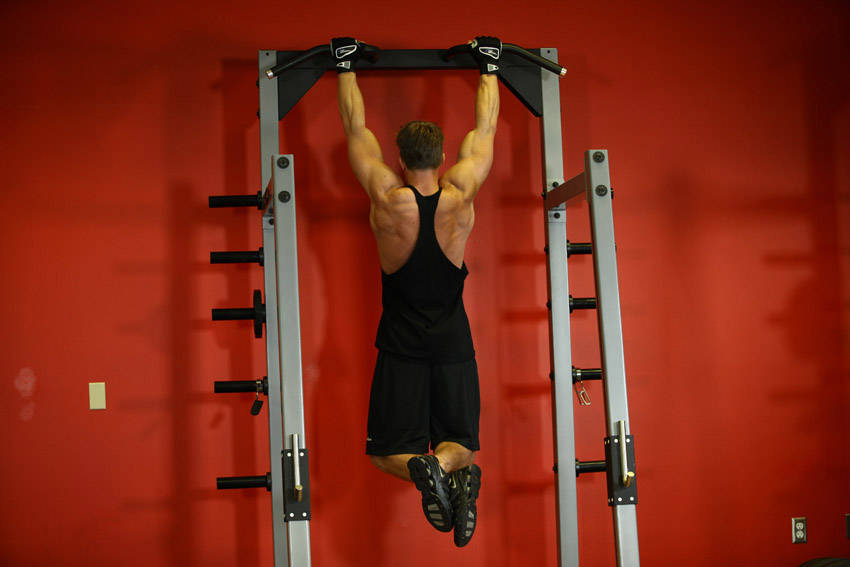
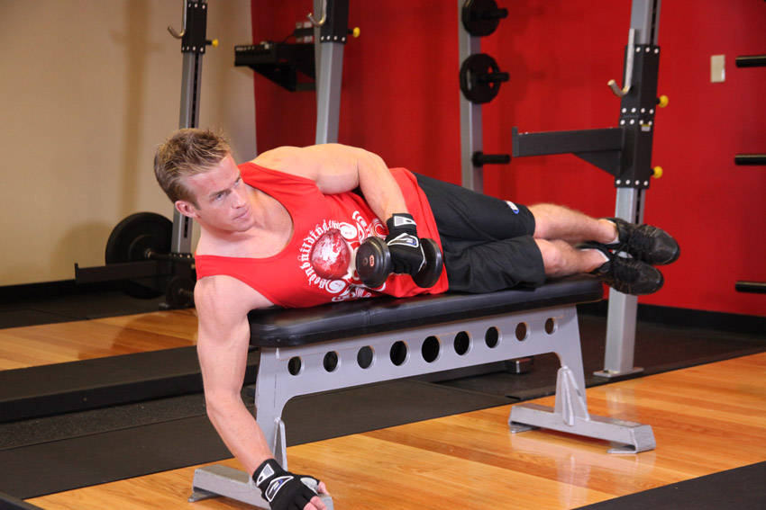
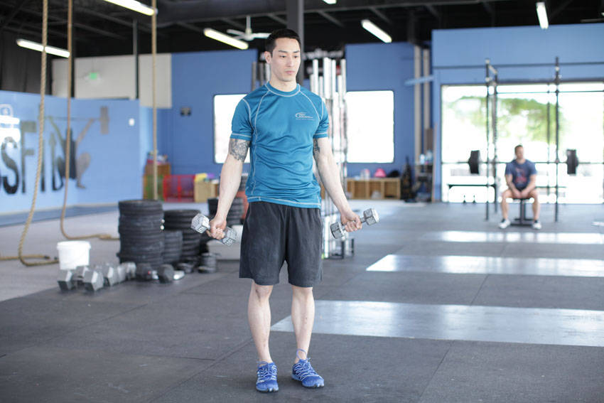
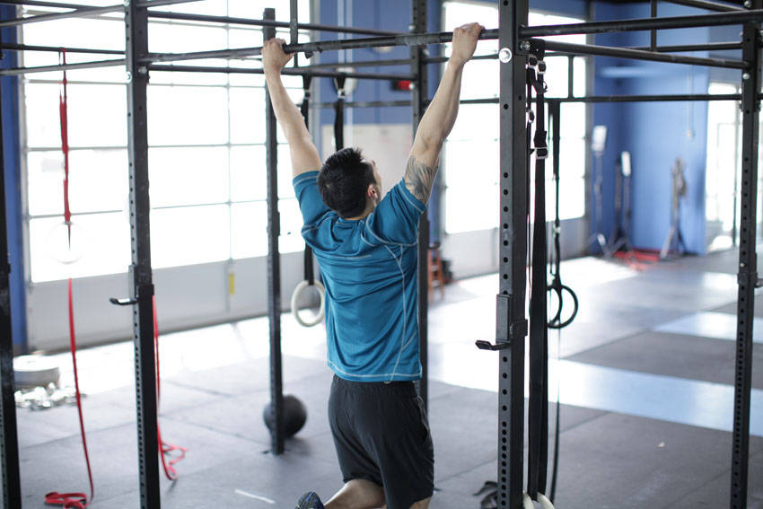
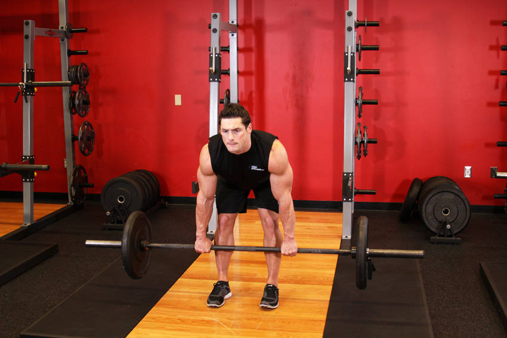
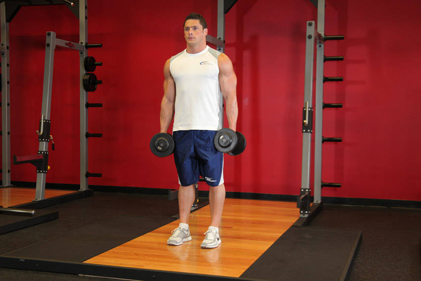
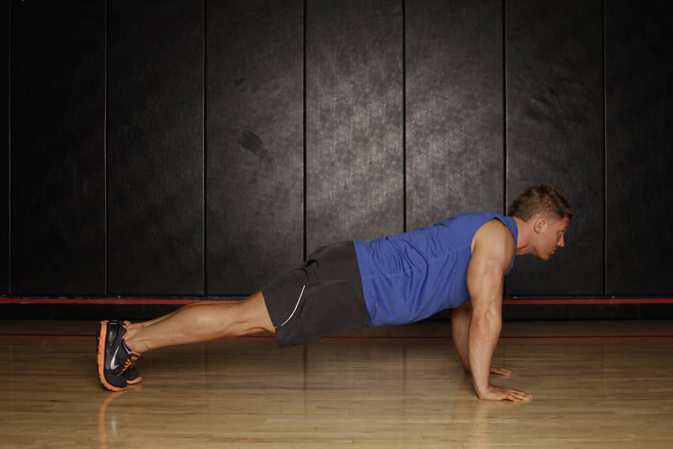
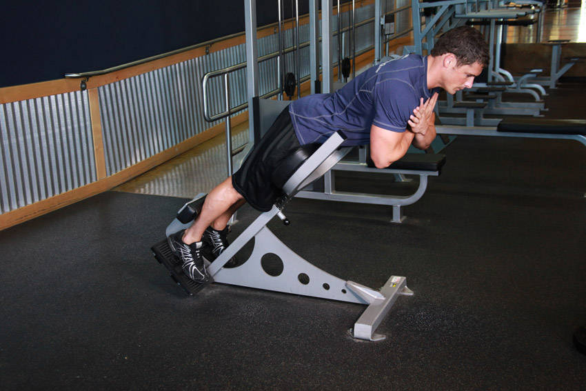
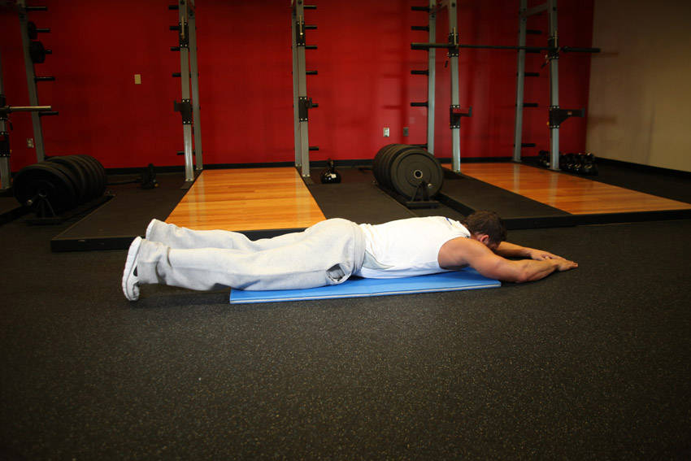
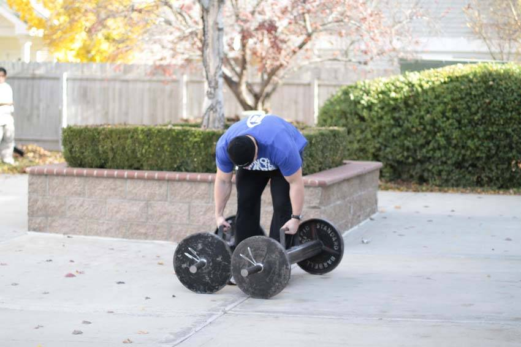

Понедельник — плечи, тяги, хват
До вторника на воде ~24 часа: работаем средне, не в отказ. Разминка: 5 мин велотренажёр → резина (ротация 2×15, Y-T-W 2×10) → кошка-корова.

1. Тяга горизонтального блока
Seated cable row
3×10–12 · отдых 90 с
- Спина нейтральная, без раскачки корпусом
- Сначала свести лопатки, потом вести локти назад
- В конечной точке — пауза 1 секунда

2. Подтягивания
Pull-ups (первые 2 недели — верхний блок)
3×6–10 · отдых 2 мин
- Хват на ширине плеч, большой палец обхватом
- Без рывка и раскачки; внизу — полное выпрямление рук
- Не тянуть шею вверх — работают лопатки

3. Жим гантелей на наклонной 30°
Incline press (на фото штанга — у вас гантели, механика та же)
2–3×8–12 · отдых 90 с
- Лопатки сведены, поясница без «моста»
- Гантели по траектории дуги, без отбива в верхней точке
- Единственный жим в программе — баланс к тягам

4. Наружная ротация на боку
Side-lying external rotation
3×15–20 · отдых 45 с · гантель 2–4 кг
- Локоть прижат к боку, согнут на 90°
- Темп медленный: 2 с вверх, 1 с пауза, 2 с вниз
- Манжета — всегда легко и многоповторно

5. Y-подъёмы (скаптион)
Dumbbell scaption / Y-raise
3×12–15 · отдых 60 с
- Лёжа лицом на наклонной 30–45°
- Большие пальцы вверх, руки в букву Y
- Вес маленький, без рывков — важнее чистота

6. Вис на турнике
Dead hang (фото — исходная фаза лопаточного подтягивания)
2–3×макс · отдых 90 с
- Плечи чуть «вниз-назад», не виснуть на шее
- Дышать, не задерживать дыхание
- Прогрессия — секунды: 30 → 45 → 60+
Среда — низ, кор, лёгкие плечи
Плечи только лёгкой резиной (смазка) — четверг на воде, они должны быть свежими. Разминка: 5 мин велотренажёр → 90/90 бёдра → выпад с поворотом.

1. Гоблет-присед
Goblet squat
3×8–12 · отдых 2 мин
- Гантель вертикально у груди, локти внутри коленей
- Колени идут по линии стоп, полная стопа давит в пол
- Глубина комфортная, спина прямая

2. Румынская тяга
Romanian deadlift
3×8–12 · отдых 2 мин
- Таз назад, а не присед — шарнир в тазобедренном суставе
- Спина нейтральная, снаряд близко к ногам
- Продолжение утренней гиперэкстензии — задняя цепь

3. Выпад назад с поворотом корпуса
Rear lunge + torso rotation (на фото без поворота — добавьте его)
2–3×8–10 на ногу · отдых 60 с
- Шаг назад, колено задней ноги к полу
- Корпус поворачивается в сторону передней ноги
- Руки у груди — вращение грудного отдела, не поясницы

4. Паллоф-пресс
Pallof press
3×10–12 на сторону · отдых 45 с
- Стоя боком к блоку на высоте груди
- Выпрямить руки от груди и держать 2 с — корпус не вращается
- Анти-ротация — прямой профиль нагрузки фристайла

5. «Дровосек» на блоке
Cable wood chop (высокий → низкий)
3×10–12 на сторону · отдых 60 с
- Руки прямые — работают корпус и бёдра, не руки
- Движение по диагонали, вес переносится с дальней на ближнюю ногу
- Без рывка, контролируемый возврат

6. Боковая планка
Side plank (фото — переходная фаза)
3×30–45 с на сторону · отдых 45 с
- Опора: локоть строго под плечом
- Тело — прямая линия, таз не проваливается
- Легче — с колена; тяжелее — с подъёмом верхней ноги
Разминка и утренняя зарядка
Утро (ежедневно, с 13.09): гиперэкстензия + пресс, корпус свисает с кровати. В зале — как разминка перед Пн/Ср.

Гиперэкстензия (утро)
Back extension
1→3 подхода × 10–15
- Плавно, без переразгибания вверх
- Прогрессия: добавлять подход раз в 2 недели
- Домашний вариант — корпус свисает с края кровати

«Лодочка» / супермен
Superman — прогрессия гиперэкстензии
2×10–15, удержание 2 с
- Одновременный подъём рук и ног
- Шея нейтральна, взгляд в пол
- Добавить на 5–6-й неделе зарядки

Кошка-корова
Cat-cow — мобильность грудного отдела
5–8 циклов, ежедневно
- Движение волной от таза к шее
- Дыхание: выгиб — выдох, прогиб — вдох
- Идеально утром и перед водой

90/90 бёдра
90/90 hip — ротация тазобедренных
5 на сторону, перед сессией Ср
- Обе седалищные кости на весу, спина прямая
- Перенос колена без завала корпуса
- Ротация бедра — база для движений в лодке

Y-T-W с резиной (разминка)
Y — карточка №5 понедельника; на фото W-фаза (обратные разведения); T — между ними, palms down
2×10 каждая буква, перед залом
- Резина лёгкая, темп ровный
- Лопатки — главное действующее лицо
- Разминка, не работа: до лёгкого тепла
Лопаточные подтягивания (разминка Пн)
Scapular pull-up
2×8–10, в начале понедельника
- На прямых руках — только лопатки вниз-вместе
- Амплитуда маленькая, без сгибания локтей
- Плюс виса: хват — расходник фристайла

Бонус: прогулка фермера
Farmer's walk — вместо/вдобавок к вису
2×30–40 м, по настроению
- Хват + кор + трапеции одновременно
- Плечи не поднимаются к ушам
- Хорошо в конце среды, если есть силы